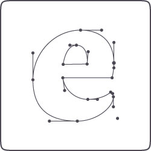
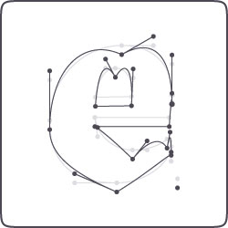
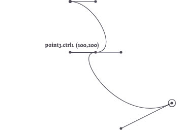
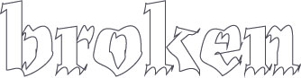

Manipulating Paths
Each of the NodeBox shape commands (oval(), rect(), etc.) returns a path. This path is actually a list of points, in which each point (or PathElement) has certain properties that you can manipulate. This way you can retrieve or edit the coordinates for each point, the coordinates of its control handles, and the kind of points you are dealing with (straight line, curve, pen move).
|  This is the path and its points returned from the textpath() command, for the character e in the Dolly typeface: |  This is the same path, but modified. The location of each point in the path is translated downwards. |
font("Dolly-Bold", 300) path = textpath("e", 200, 200) drawpath(path) | font("Dolly-Bold", 300) path = textpath("e", 200, 200) points = [] for point in path: point.y += 20 points.append(point) drawpath(points) |
Looping through all the points
As the above example shows, you can easily manipulate a path by looping through all of the points in the path with a for-loop, before actually drawing the path.
path = textpath("hello", 100, 100) points = [] for point in path: # --> Manipulate points here points.append(point) drawpath(points)
beginpath(100,100) curveto(150, 100, 200, 200, 50, 400) path = endpath(draw=False) points = [] for point in path: # --> Manipulate points here points.append(point) drawpath(points)
Manipulating points
Each point in the path is a PathElement object with the following attributes:
- point.x: the x-coordinate or horizontal location.
- point.y: the y-coordinate or vertical location.
- point.cmd: the type of line segment, either LINETO, CURVETO, MOVETO or CLOSE,
- point.ctrl1.x: if CURVETO, the x-coordinate of the first control handle of the curve.
- point.ctrl1.y: if CURVETO, the y-coordinate of the first control handle of the curve.
- point.ctrl2.x: the x-coordinate of the second control handle.
- point.ctrl2.y: the y-coordinate of the second control handle.
The handles are useful for paths that consist of multiple Bezier curves. The ctrl1 handle of a point controls how the curve connects to the previous point, the ctrl2 handle how the curve connects to the next point.
For example:
nofill() stroke(1) autoclosepath(False) beginpath(100,100) curveto(150, 100, 200, 200, 150, 200) curveto(100, 200, 200, 350, 300, 300) p = endpath() print p[1].ctrl1.x

Example
The following example manipulates a text path, letting each curving point droop a bit (let's hope the guys at Underware don't freak when they see what happened their beautiful typeface)! Some more advanced math could create a handwritten variation of the text, or a text in which character looks different each time.

font("Dolly-Bold", 100) path = textpath("broken", 200, 200) points = [] for point in path: if point.cmd == CURVETO: point.ctrl2.x += 5 point.ctrl2.y -= 10 point.y += 5 points.append(point) nofill() stroke(0) drawpath(points)